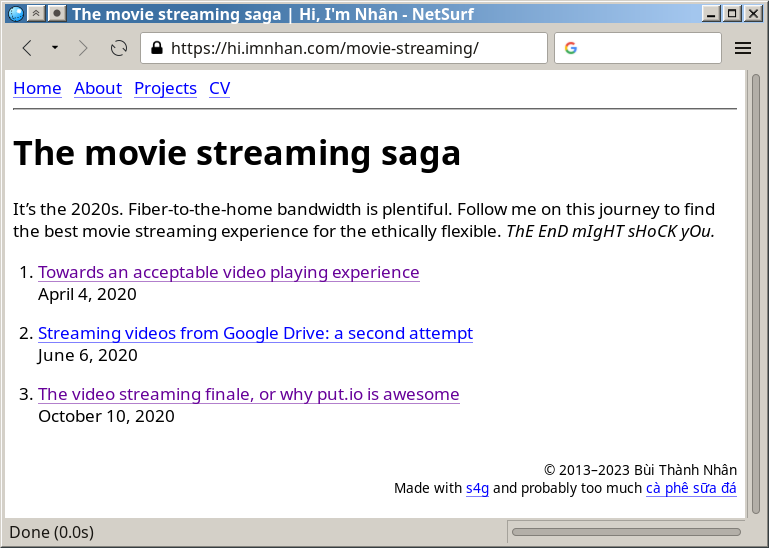
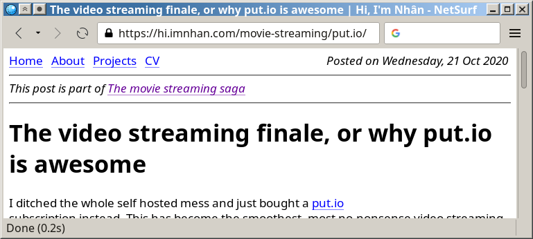
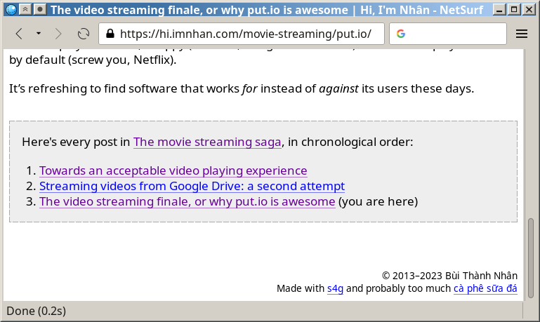

s4g is a Stupidly Simple Static Site Generator
This blog is now built with s4g—a static site generator (SSG) made by yours truly.
Why?
What sets s4g apart from typical SSGs is that it doesn’t separate source code and output. For a concrete example, Pelican would read source from the /content/ dir and write a complete website to /output/, like this:
my-blog
├── content <-- source
│ ├── pages
│ │ ├── about.md
│ │ └── home.md
│ └── posts
│ ├── first-post.md
│ └── second-post.md
└── output <-- generated website ready to be served
├── about
│ └── index.html
├── home
│ └── index.html
└── posts
├── first-post
│ └── index.html
└── second-post
└── index.html
While s4g would simply put the processed html right next to its source (s4g uses djot instead of markdown, so source files are .dj instead of .md):
my-blog <-- is both source and serveable website
├── about
│ ├── index.dj
│ └── index.html
├── home
│ ├── index.dj
│ └── index.html
└── posts
├── first-post
│ ├── index.dj
│ └── index.html
└── second-post
├── index.dj
└── index.html
This simplifies a few things:
1. Folder layout is website layout
With Pelican you typically need to supply a few url patterns to let the generator know where to put the generated html:
ARTICLE_PATHS = ["posts"]
ARTICLE_URL = "posts/{slug}/"
ARTICLE_SAVE_AS = "posts/{slug}/index.html"
ARTICLE_LANG_URL = "posts/{slug}-{lang}/"
ARTICLE_LANG_SAVE_AS = "posts/{slug}-{lang}/index.html"
While with s4g you just put the .dj file where you want the .html to end up.
2. Obvious static asset placement
A post typically links to static assets such as images or videos. Ideally we want to put these assets in the same place as their content file. This is surprisingly tricky with Pelican: you have to either throw every asset of every post in one big static folder, or carefully tweak the url settings and use a custom link syntax, as per their docs:
Note: Placing static and content source files together in the same source directory does not guarantee that they will end up in the same place in the generated site. The easiest way to do this is by using the
{attach}link syntax (described below). Alternatively, theSTATIC_SAVE_AS,PAGE_SAVE_AS, andARTICLE_SAVE_ASsettings (and the corresponding*_URLsettings) can be configured to place files of different types together, just as they could in earlier versions of Pelican.
With s4g, we can simply put asset files in the same folder as the index.dj
file, and use relative links when referencing them in the djot body.
Here’s an example from my blog:
# a post's folder structure:
sqlite-python/
├── byte_databases.jpg <-- asset
├── index.dj <-- source
└── index.html <-- generated html
# in index.dj, to generate an img tag:

No custom url syntax needed, and any djot previewer will have no problem picking up the image (assuming djot gets popular enough to get previewer support in the first place).
3. Easy post grouping
Sometimes I write a series of related posts, and want to make it obvious when a visitor lands on any such post. The s4g solution: put them all in a folder. Here’s a live example from my blog:
movie-streaming/ <-- series home
├── gflick <-- post
│ ├── index.dj
│ └── index.html
├── gflick-fixed <-- post
│ ├── gflick_01_mobile.png
│ ├── index.dj
│ └── index.html
├── index.dj
├── index.html
└── put.io <-- post
├── index.dj
├── index.html
└── put.io-drag-n-drop.mp4
Here’s the content of /movie-streaming/index.dj:
Title: The movie streaming saga
ShowInFeed: false
PageType: series-index
---
It's the 2020s. Fiber-to-the-home bandwidth is plentiful.
Follow me on this journey to find the best movie streaming experience for the
ethically flexible. _ThE EnD mIgHT sHoCK yOu._
When s4g finds a .dj with PageType: series-index, it treats the page as a
series index, and its direct subfolders as posts in this series.
The series index renders its list of posts in addition to its own djot content:

Each post in the series has a extra header and footer:


Miscellaneous blog things
An RSS feed is table stakes, so that’s what you get out of the box. Technically it’s an Atom feed, but hey, tomaytoes-tomahtoes.
There’s also automatic OpenGraph / Twitter Cards meta tags, so you get those sweet preview widgets when sharing your links on social media or rich chat applications.
Cool links don’t die, but sometimes you do want to change a post’s URL. In such cases, simply add a line to _s4g/redirects.txt that says:
old-link/index.html -> new-link/
S4g will then generate an html with the appropriate <meta
http-equiv="Refresh" ... > tag to redirect visitors to your new location. I
heard this works on googlebot too! Anyway, this is how I updated all of my old
lengthy paths e.g. “posts/introducing-mcross-a-minimal-gemini-browser” to
short, typeable paths such as “mcross”.
Quality-of-life stuff
I originally wanted to use s4g as a teaching tool for a sort of “Learning HTML/CSS by creating a blog” tutorial series, but lost interest halfway. It still resulted in a few user-friendly goodies: out-of-the box livereload, a custom human-friendly metadata syntax, error message shown directly on the browser (still incomplete: it includes the offending file and field, but no line number yet), etc.
The livereload turns out to be quite handy: it feels especially nice to edit my css, save and see the change instantly on my phone browser.
Risks
Since source and output live in the same folder, there’s a non-zero chance that some bug in s4g may eat your source data. I obviously don’t want that to happen, but I haven’t tested it rigorously. Therefore, I only run s4g on version-controlled websites, and recommend users do the same.
Quickstart
I probably won’t bother to write proper documentation any time soon, because let’s face it: I’m probably going to be s4g’s only user.
However, if you’re curious enough to tinker with it, the following should get you started:
# Install
sudo pacman -Syu nodejs go
go install go.imnhan.com/s4g@latest
# Create first blog
s4g new -f ~/blog
cd ~/blog
s4g # start webserver at localhost:8000 and listen for changes
Visit http://localhost:8000 and you’ll see a blank home page.
To add your first post, create a new hello.dj file:
Title: Hello world
PostedAt: 2023-01-02 19:00
---
Why _hello_ there!
The home page will now auto-refresh, showing your newly minted “hello world”.
For more elaborate examples, check out the sample site and my own blog, which cover hidden posts, deploying on sub-directory paths, custom & fallback thumbnails, per-post custom templates, series, among other things.